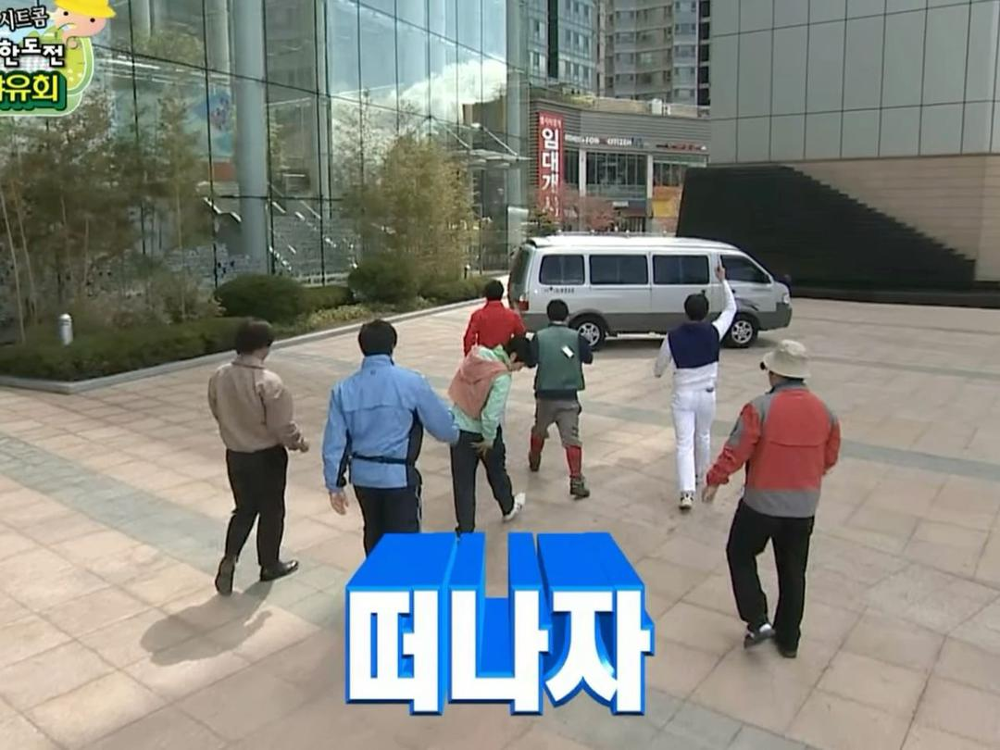
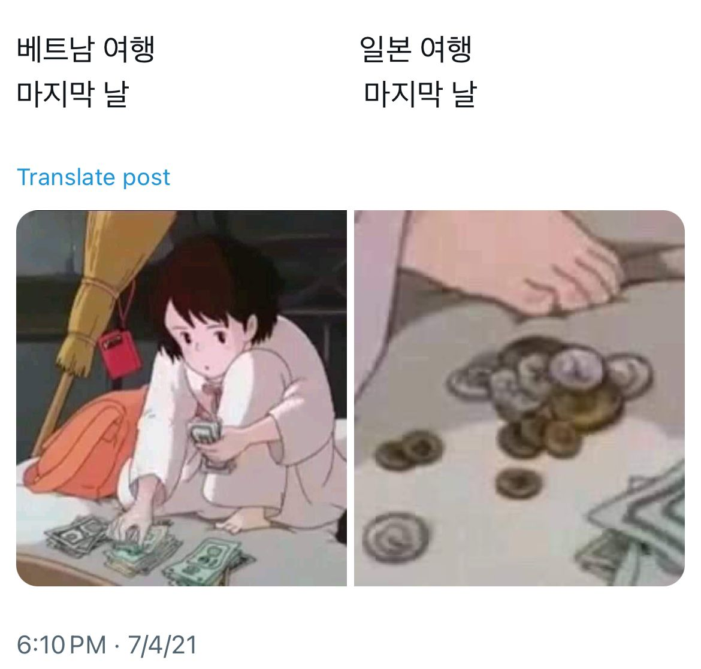
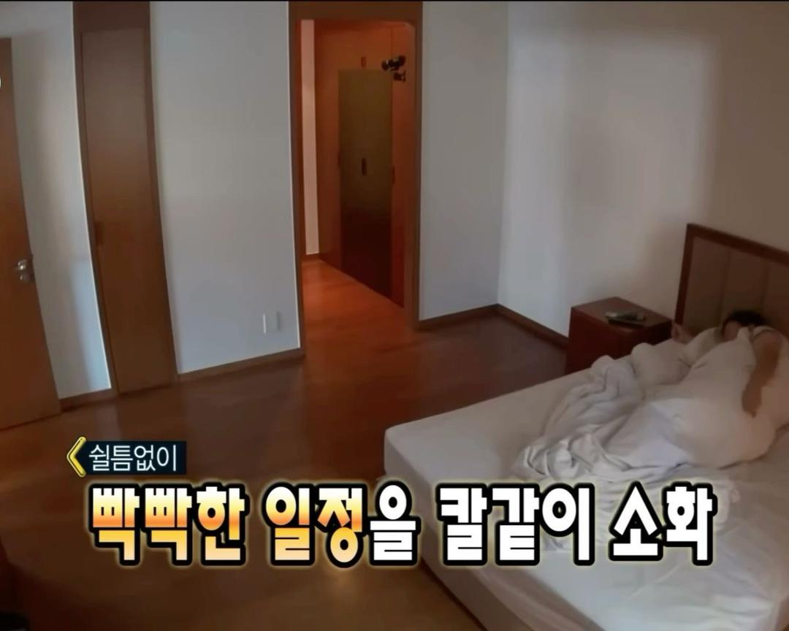
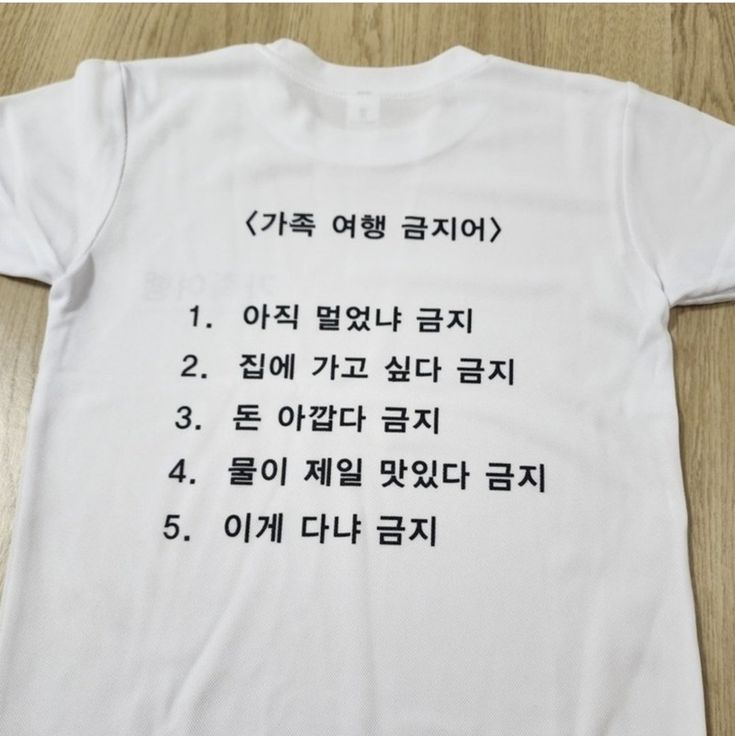
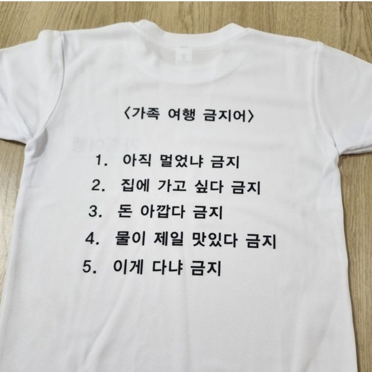
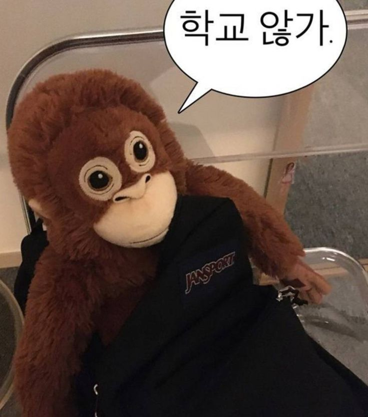

10월 31일 Day 1 - 나트랑 도착 & 시티투어


11:35-12:00
12:00-13:00
13:00-17:00
17:00-19:00
20:00-21:00
21:00-01:00
아빠 기다리면서 잘 준비 하기
내일 아침에 출발하기 때문에 풀은 짐이 있다면 다시 싸놓기
예상 비용: 없음
이동수단: 없음
Day 2 - 달랏 탐방

 

06:00-07:00
07:00-11:30
달랏 이동
- 풍짜버스 이용하기 인당 9000원 예상
예상 비용: 680,000동
이동수단: 풍짜버스
11:40-12:20
다딴라 폭포
- 루지: 왕복 230,000동(폭포 3으로 이동시) 130,000동(폭포 1로 이동시)
집라인: 1,000,000동(1.5키로미터)
하이 로프 코스: 460,000동
cannoying: 1,886,000동
예상 비용: 50,000동
이동수단: 그랩 죽림사에서 그랩으로 10분 예상
다딴라 폭포 위치12:30-13:10
13:10-13:30
13:30-15:00
15:00-16:20
16:20-17:30
17:30-19:00
하고 싶은 활동 골라서 하기
가현이가 고른건 여기까지라능...
예상 비용: ?
이동수단: 그랩
19:30-21:30
19:30-21:30
Day 3 - 나트랑 시내 구경

07:00-11:30
달랏에서 나트랑으로 출발
올 때랑 똑같이 풍짜버스 사용
11:30-12:00
숙소 도착 후 짐 맡기고 투어 돌기
- 전용 보트 이용
- Mun Island, Mot Island 방문
예상 비용: 1,200,000동
12:10-14:00
시내 열삼히 구경
-포나가르 탑
- 담시장
-롱선사
-대성당
예상 비용: 그랩 150,000동 (4번)
14:00-15:00
점심먹기
맛집 리스트에서 하나 고르기
예상 비용: 500,000동
15:00-17:00
마사지 받기
주위에 마사지샾 많음
17:00-18:00
일찍 들어와서 쉬기
18:00-19:00
저녁
즉흥으로 고르자
예상 비용: 600,000동
19:30-21:00
해변 산책
- 나트랑 해변에서 산책 겸 소화
Day 4 - 나트랑 바다 구경

08:00-09:00
호텔 주위 시내에서 먹기
냠냠
09:00-15:50
16:30-18:00
나갈 준비
-씻고 준비해서 나갈준비를 한다
예상 비용: 없음
18:00-22:00
22:00-23:00
23:00-00:00
하고 싶은거
-피곤하니깐 나름 일찍자기
예상 비용: 없음
Day 5 -이제는 집에 가야 할 시간

06:00-07:00
가방싸고 나오기
-압쥐의 일정은 내가 몰겠습네다
07:00-11:00
공항가서 체크인하고 준비하기
- 학교를 다시 가야한다는 슬픈 마음으로
11:00-12:00
비행기 탑승
- 빠빠이
예상 비용: 내 과민성대장증후군
나트랑에서 꼭 사와야 할 기념품 🛍️
- 냠냠 망고 푸딩: 다들 저거 사감
- 메이드 인 나트랑 소금: 천연 해산물로 유명한 나트랑의 소금은 맛있당.
- 건어물: 해산물로 유명한 나트랑에서 말린 오징어, 새우 냠냠
- 망고 젤리: 친구들이 사오라고 반협박
나트랑 맛집 추천 🍽️
- 촌촌킴: 한국어 메뉴 제공, 저렴한 가격의 베트남 가정식. 스프링롤과 돼지갈비찜이 인기.
- 분짜하노이: 분짜 맛집, 저렴하지만 위생이 별로.
- 포홍(하이카): 로컬 쌀국수집, 오렌지 주스가 맛있음.
- 리스그릴: BBQ와 해산물 전문, 가격이 비쌈.
- 세일링클럽: 한국어 메뉴, 분위기 좋은 해변가 레스토랑.
- 마담프엉: 한국어 메뉴, 5성급 리조트 출신 쉐프의 요리.
- 떠이66: 해산물 식당, 계란 볶음밥과 칠리 새우 추천.
- 놈놈: 김치 피자와 다양한 메뉴, 한국어 메뉴 제공.
- 짜오마오: 베트남 가정식, 갈릭 새우와 반쎄오 인기.
- 포 70: 로컬 쌀국수집, 오전 10시까지만 영업.
- 갈랑가: 가정식과 스트릿푸드, 반미와 반쎄오 유명.
- 루남 비스트로: 양식집, 가격 대비 맛이 별로.
- 볼락: 반비와 볼락 전문, 로컬 맛집.
- 옌스: 반쎄오와 쌀국수 맛있음.
- 껌땀: 로컬 덮밥 맛집, 최근 리뉴얼.
- 타로찬: 게 요리 전문, 후기가 좋음.
- 랜턴스: 한국어 메뉴 제공, BBQ와 쌀국수.
- 짜까하노이: 생선튀김 전문.
- 콴코리엔: 가성비 갑, 분짜 맛집.
- 반쎄오85: 반쎄오와 스프링롤 전문.
- 동호관: 해산물 전문, 오징어튀김과 새우구이 추천.
- 락깐: 숯불구이집, 위생 별로.
- 꽌 넴 당반꾸엔: 넴느엉 전문, 가성비 갑.
- 포한푹 (행복 쌀국수): 뚝배기 쌀국수집, 한국인 입맛.
- 인디스키친: 한국인 사장, 한식과 양식.
- 알파카: 파스타와 피자.
- 반깐51: 길거리 반깐집.
나트랑 카페 추천 ☕
- 콩카페: 유명한 베트남 커피 전문 카페, 코코넛 스무디와 멍빈 스무디가 인기.
- 레인포레스트: 분위기 좋은 카페, 코코넛 커피와 망고 스무디 추천.
- 안카페: 풀숲 컨셉, 코코넛 아이스크림과 스무디.
- 카페 테라스: 비치 근처, 쾌적한 인테리어와 한국 가격 비슷.
- CCCP 카페: 사회주의 컨셉, 쓰어다와 코코넛 스무디.
- 하이랜드: 베트남의 스타벅스, 쓰어다.
- 일라차: 밀크티 카페, 흑당 버블티와 자몽티 추천.
- 브이푸룻: 생과일 스무디 전문, 아보카도 아이스크림 스무디가 유명.
- 혼총커피: 오션뷰가 멋진 노천 카페.
- 브리티: 영국식 인테리어, 다양한 홍차 제공.
- 디 트레인 커피: 한국 카페 느낌, 기차역 옆 위치.
- 정글커피: 예쁜 인테리어, 대성당 근처, 한국 사람이 적음.